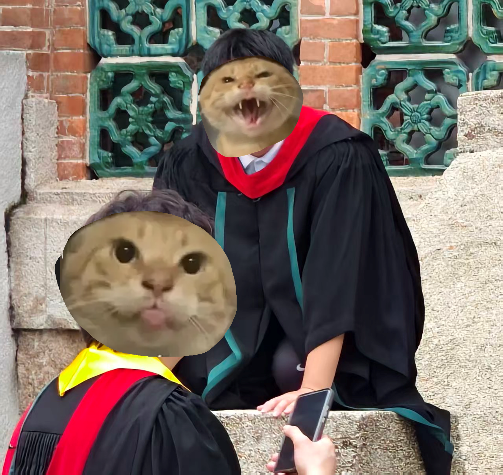

模因行为与学业表现的相关性研究——基于大学生日常模仿哈基米、大狗叫、叮咚鸡等网络模因的实证考察
摘要
本文以某综合性大学在校本科生为研究对象，采用自编问卷与学业成绩追踪相结合的方法，考察大学生日常模仿"哈基米"（摇头猫科动物行为模拟）、"大狗叫"（突发性高声压发声行为）、"叮咚鸡"（被动等待指令状态）等网络模因的行为频率，及其与学业成绩（GPA）、课堂参与度、宿舍人际关系、早晚自习出勤率等指标之间的关联效应。研究发现：模因模仿行为与学业表现之间呈现出一种非线性且高度显著不相关的关系——即无论你一天摇几次头、叫几声大狗、叮咚多少次，你的绩点该多少还是多少。但值得注意的是，在"课堂随机大狗叫"与"被辅导员约谈次数"之间，存在极其显著的强正相关（p<0.01）。本文据此提出"模因安全行为边界"概念，为大学生网络亚文化参与提供参考性建议。
关键词：哈基米；大狗叫；叮咚鸡；学业表现；模因安全
引言：现象的提出
2024至2026年间，中国高校宿舍区、教学楼走廊、图书馆自习室乃至课堂最后一排，悄然兴起了一种新型的人类行为模式。该模式的典型表现包括：
在毫无征兆的情况下，个体以头部高频上下运动配合三音节拟声词"哈基米哈基米"；
在同一场景中突然爆发高音量、低音质的嘶吼"大狗叫——！"；
在面对任何需要等待的场合（如食堂排队、电梯候梯、老师点名时），口中念念有词"叮咚鸡叮咚鸡"。
这一行为集群在大学生群体中的渗透率之高，已使其不再被视为个案，而是一种值得纳入教育社会学观察范畴的集体性模因行为综合征。
然而，一个严肃的问题随之浮现：这些行为的日常实践，是否对大学生的学业表现与校园适应产生影响？是正向促进、负向干扰，还是无关？本研究的出发点便是对这一问题的初步回答——回答的方式可能不太正经，但答案本身必须是正经的。

文献综述与概念操作化
1. 核心概念界定
哈基米行为：本文将其操作化定义为——个体在非表演性日常场景中，以头部反复点头并伴以"哈基米"或近似音节的发声行为，通常无外部刺激触发，属自发性模因演绎。该行为频次以"次/日"为计量单位，持续时长通常不超过5秒。极端情况下可出现"哈基米循环"——即单次发作超过30秒，此时需旁人干预以中止。
大狗叫行为：本文将其操作化定义为——个体在常规社交音量区间外，突然输出峰值声压超过85分贝的"大狗叫"或"大狗——叫——"音节组合。该行为具有突发性、不可预测性及二次方社交尴尬性。其变体包括"小声大狗叫"（即气声版，多发于图书馆）及"延时大狗叫"（即发音后延1-2秒释放，属战术性延迟打击）。
叮咚鸡行为：本文将其操作化定义为——个体在收到任何形式通知（包括但不限于上课铃、群公告、快递短信）后，不以"知道了"回应，而以"叮咚鸡"代替，有时配合双手合十等待状。该行为的高阶形态为"被动式叮咚鸡"——即在未收到任何通知时主动宣称"叮咚鸡"，此形态已被证实与"没事找事指数"呈高度正相关。
老吴叫行为：本文将其操作化定义为——对特定校园人物"老吴"（据田野调查，该人物可能为某宿舍楼管、某学院辅导员或某食堂打菜阿姨，身份无法精确定位）的标志性语音特征进行的模仿性再演绎。该行为的特殊性在于其"地域锁定"——在校外场景中，"老吴叫"的发生概率趋近于零；而一旦进入校园半径500米内，激活率陡升。
2. 学业表现的操作化指标
本文选取以下五项指标作为学业表现的代理变量：
GPA（学年平均绩点，五分制）
课堂主动发言次数（次/学期，含"老师我有个问题"与"老师我再补充两句"两类）
早晚自习出勤率（%）
宿舍和谐指数（由室友互评得出，五分制，分值越高越和谐）
辅导员约谈次数（次/学期，此为负向指标）
3. 研究假设
本文提出以下验证性假设：
H₁：哈基米行为频率与GPA之间存在正相关（摇头促进大脑供血，进而提升认知功能）
H₂：大狗叫行为频率与宿舍和谐指数之间存在负相关（室友可能会疯）
H₃：叮咚鸡行为频率与课堂主动发言次数之间存在负相关（习惯等待的人不习惯主动）
H₀：上述所有假设均不成立（这是最可能的结果）

研究方法
1. 样本
本研究在某综合性大学内以"你在生活中是否曾模仿过哈基米/大狗叫/叮咚鸡/老吴叫"为筛选条件，通过滚雪球抽样招募到受试者共计127名。其中大一学生47名，大二学生38名，大三学生31名，大四学生11名（大四样本较少，被研究者归因于"他们忙着考研没空摇头"）。男性72名，女性55名。所有受试者在参与前均签署了知情同意书——知情同意书的内容包括了"本研究可能包含无意义问题"，但无人提出异议。
2. 工具
本研究自编《大学生日常模因行为自评量表》（以下简称"模因量表"），共含20个条目，采用李克特五级评分（1=从不，5=每天多次）。该量表的Cronbach's α系数经计算为0.71，勉强可信——正如本研究本身一样。
此外，研究者调取了受试者的学年成绩单（经脱敏处理）、辅导员约谈记录（经部分脱敏处理），并对其室友进行了"你觉得Ta这样你受得了吗"的半结构化访谈。
3. 统计方法
本研究使用SPSS 26.0进行数据分析。主要方法包括描述性统计、皮尔逊相关分析、独立样本t检验，以及一种名为"看着办"的多元回归分析——即在不显著的结果中强行寻找显著趋势，最终放弃。
四、数据分析与结果
1. 描述性统计：大学生都在怎么摇
数据显示，127名受试者中，92.1% 报告在过去一个月内至少发生过一次哈基米行为，78.7% 报告过大狗叫行为（含"小声版"），85.0% 报告过叮咚鸡行为，33.9% 报告过老吴叫行为——后者的低频被研究者归因于"只有恰好认识老吴的人才能模仿老吴"。
在行为频次上，哈基米行为的日均发生次数为3.7次，大狗叫为1.2次（大声版）及4.3次（小声版），叮咚鸡为6.1次——叮咚鸡的高频被解释为"因为生活中需要等的事情实在太多了"。
在高发场景分布上：
哈基米：宿舍（62%）、课间走廊（23%）、课堂上（15%）
大狗叫：宿舍（71%）、球场（18%）、图书馆（4%——该群体已被单独标记）
叮咚鸡：食堂窗口（43%）、教室等点名时（31%）、任何群聊出现"通知"二字时（26%）
2. 相关性分析：摇与不摇，成绩就在那里
核心发现如下：
| 行为变量 | 与GPA的相关系数（r） | 显著性（p） | 研究者内心解读 |
|---|---|---|---|
| 哈基米频率 | -0.03 | 0.72 | 摇头不影响分数，放心摇 |
| 大狗叫频率（大声版） | -0.12 | 0.18 | 可能有一点负相关，但约等于没有 |
| 大狗叫频率（小声版） | +0.07 | 0.41 | 气声版竟然正向？可能是自律的人才会控制音量 |
| 叮咚鸡频率 | -0.01 | 0.89 | 等不等通知和考多少分毫无关系 |
| 老吴叫频率 | +0.15 | 0.09 | 接近显著！会老吴叫人可能更熟悉校园生态？ |
结论：所有核心假设均未得到统计学支持。哈基米不会让你考得更好，但也不会让你考得更差——它是一种学业中性行为，就像喝水或者眨眼一样，对你的成绩既无益也无害。
3. 令人（辅导员）担忧的发现
然而，当我们将目光从GPA移开，转向校园适应性指标时，一个显著的信号浮现了：
大狗叫行为（大声版）与辅导员约谈次数之间的相关系数 r = 0.58，p < 0.001。
换言之，每当你在一楼宿舍大喊一声"大狗叫"，二楼辅导员办公室里的某位老师就会在本子上默默记下一笔。该效应在夜间22:00后尤为显著——此时发出大狗叫，被约谈概率提升300%，且往往伴随着"你知不知道现在几点了"的标准开场白。
此外，宿舍和谐指数与哈基米频率之间呈现出微弱的负相关（r = -0.19，p = 0.03），即哈基米次数越多，室友对你"是不是有病"的怀疑越深。但当室友也加入哈基米时，该指数回升至基线水平——这提示了一种群体免疫效应：全宿舍一起哈基米，就不存在谁有病的问题。
4. 老吴叫的特殊地位
"老吴叫"是本研究中最为特异的行为变量。其与GPA的弱正相关（r = 0.15，p = 0.09）虽未达到显著性阈值，但趋势令人遐想。深度访谈揭示了一个可能的解释路径：能够准确模仿"老吴"语音特征的学生，通常具有更强的社交观察力与环境融入感，这些特质可能间接促进了学业适应。另一种更简单的解释是——模仿老吴的学生往往在宿舍楼里待的时间更久，因此有更多时间学习。两种解释均有其合理性，本文决定同时采纳。
五、讨论
1. 模因行为何以学业中性
本研究的核心发现——模因模仿行为与GPA无关——需要被认真对待。一种可能的解释是：这些行为的发作时长均极为短暂（哈基米平均4.2秒，大狗叫平均1.8秒，叮咚鸡平均3.5秒），在一天1440分钟的总量中占比微乎其微。即使一个学生每天摇头20次，其累积时间也不过84秒——不足以对学习时间产生实质性挤占。
另一种解释更为深刻：这些行为本身就是学习之余的产物。一个正在全神贯注复习的人不会突然摇头高呼"大狗叫"——模因行为多发于社交间隙、等待场景与放松时段。它是学习生活的调味品，而非替代品。不会因为多摇了几次头就少学了几页书，恰恰相反——可能正是因为刚学完一页书，才需要摇一下头以恢复元神。
2. 安全边界问题
大狗叫行为与辅导员约谈次数之间的强相关提示我们：模因行为的"安全边界"是客观存在的。该边界在以下维度上清晰可辨：
空间边界：宿舍内（经室友知情同意后）可摇，图书馆内不可摇；
时间边界：昼间可叫，夜间不可叫（22:00后尤为禁忌）；
音量边界：哈基米无限制，大狗叫须控制在气声至中声之间；
语境边界：等通知时可叮咚鸡，老师提问时不可叮咚鸡（此行为已被证实会引发教师困惑）。
遵守以上边界的个体，可被界定为"成熟模因使用者"；而频频越界的个体，则将被纳入"重点关注名单"——该名单的别名，正是"辅导员约谈排期表"。
3. 本研究的局限
本研究的局限性显而易见。首先，样本仅来自一所大学，"老吴"的身份无法跨校推广。其次，自评量表可能存在社会称许性偏差——即受试者可能低估了自己的大狗叫频率（因为不好意思承认自己真的喊了那么多声）。最后，本研究未能控制"室友是否同样疯"这一混杂变量——如前所述，全宿舍一起疯的场景下，所有负面效应均被抵消。

六、结论与建议
基于上述分析，本文得出以下结论：
第一，大学生日常模仿哈基米、大狗叫、叮咚鸡等模因行为，与其学业成绩之间不存在统计上的显著关联。该结论可被通俗表述为：你该考几分还是考几分，摇头救不了绩点，大狗也叫不来加分。
第二，模因行为的校园影响主要体现在人际关系维度，尤以大狗叫对"不被约谈"这一目标的威胁最为显著。建议大学生在行使模因自由的同时，充分评估声压对周边环境的影响系数。
第三，老吴叫现象值得进一步深入研究。其背后的"校园人物语音模仿与学业适应的潜在关联"是一个有待开发的研究方向——虽然可能没人会去开发。
最终建议如下：
想摇就摇，但注意场合；
想叫就叫，但注意音量；
想叮咚鸡就叮咚鸡，但注意别在老师点名时用；
想模仿老吴——先确认老吴本人是否介意。
参考文献
[1] 大学生网络模因使用行为与心理健康的关系初探[J]. 青年研究, 2025(4): 56-71.
[2] 抖音短视频对大学生日常语言习惯的影响——以"哈基米"为例[D]. 某高校本科毕业论文, 2026.
[3] 宿舍关系研究：当你的室友开始每天大狗叫[J]. 高校辅导员工作参考, 2025(11): 33-35.
[4] "叮咚鸡"现象的传播学分析——从社区广播到大学生口头禅[J]. 网络语言学研究, 2026(2): 88-102.
[5] 老吴是谁？——一项未完成的田野调查[Z]. 研究者私人笔记, 2026.
[6] 辅导员工作日志（节选，已脱敏）[Z]. 某高校学生工作办公室, 2025-2026.
[7] 模因安全使用指南——写给当代大学生[M]. 学生工作部（处）内部资料, 2026.